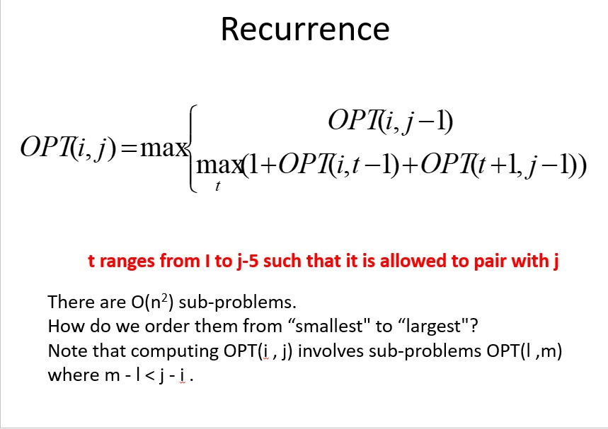
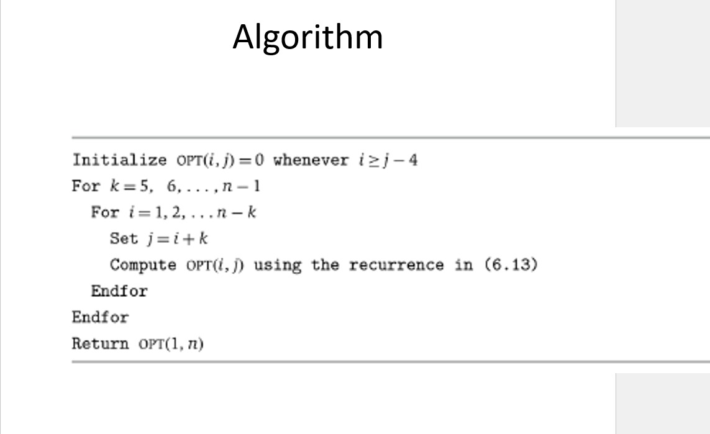
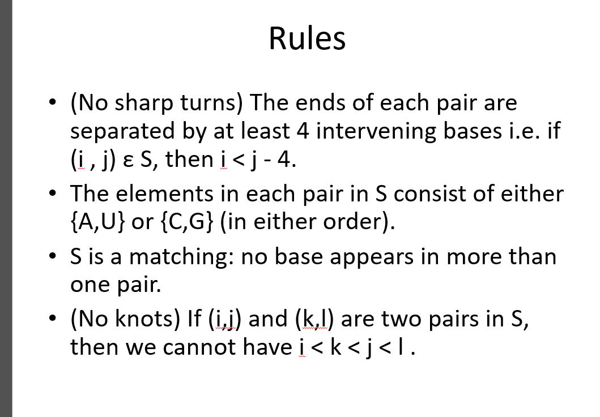
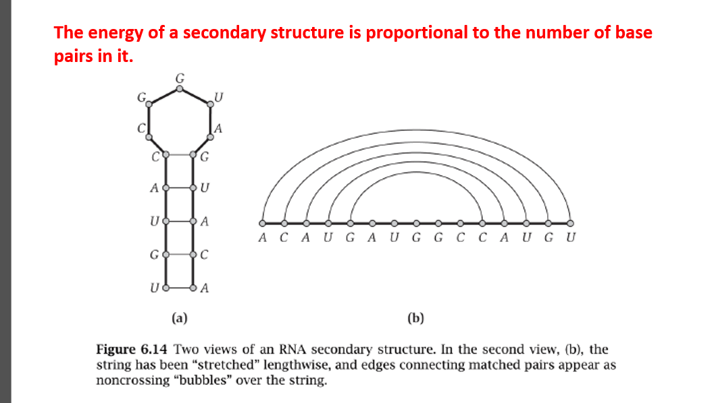

Nussinov Algorithm for RNA Secondary Structure Prediction
Introduction
The Nussinov algorithm is a dynamic programming approach used to predict the secondary structure of RNA molecules. RNA secondary structure refers to the spatial arrangement of base pairs within an RNA molecule, including the formation of stems, loops, and hairpin structures. Predicting RNA secondary structure is essential for understanding its biological function, such as in gene regulation, RNA folding, and drug design.
Algorithm Overview
The Nussinov algorithm predicts RNA secondary structure by maximizing the number of base pairs while minimizing the number of unpaired bases. It achieves this by recursively exploring all possible base pairings within the RNA sequence and assigning a score to each possible secondary structure. The optimal secondary structure is then determined based on the highest score obtained.
Algorithm Steps
- Base Pairing Rules: The algorithm uses predefined base pairing rules, where adenine (A) pairs with uracil (U), and cytosine (C) pairs with guanine (G). These rules govern the formation of base pairs in RNA molecules.
- Dynamic Programming: The algorithm employs dynamic programming to efficiently explore all possible secondary structures of the RNA sequence. It constructs a dynamic programming table to store intermediate results, allowing for the reuse of previously computed subproblems.
- Recurrence Relation: The core of the algorithm lies in the recurrence relation used to compute the optimal score for folding a subsequence of the RNA sequence. The recurrence relation considers two possibilities at each step: (a) forming a base pair between two nucleotides or (b) leaving a nucleotide unpaired.
- Traceback: After computing the dynamic programming table, the algorithm performs a traceback step to reconstruct the optimal secondary structure. Starting from the top-left corner of the table, it traces back through the table to identify the nucleotides involved in forming base pairs, thereby determining the secondary structure.
- Output: The algorithm outputs the predicted secondary structure in dot-bracket notation, where paired bases are represented by parentheses ('(' and ')'), and unpaired bases are represented by dots ('.').
Time Complexity
The time complexity of the Nussinov algorithm is O(n^3), where n is the length of the RNA sequence. This complexity arises from the nested loops used to fill the dynamic programming table.
Applications
The Nussinov algorithm has various applications in bioinformatics and computational biology:
- RNA Structure Prediction: It is widely used to predict the secondary structure of RNA molecules, facilitating the study of RNA folding and function.
- RNA Folding Simulations: The predicted secondary structures serve as inputs for RNA folding simulations, aiding in the understanding of RNA folding kinetics and thermodynamics.
- RNA Design: The algorithm is employed in the design of functional RNA molecules, such as ribozymes, aptamers, and RNA-based therapeutics.
Conclusion
The Nussinov algorithm is a fundamental tool for RNA secondary structure prediction, providing insights into the structural properties and functional roles of RNA molecules. By leveraging dynamic programming principles, the algorithm efficiently computes the optimal secondary structure, enabling a wide range of applications in biological research and biomedical engineering.



